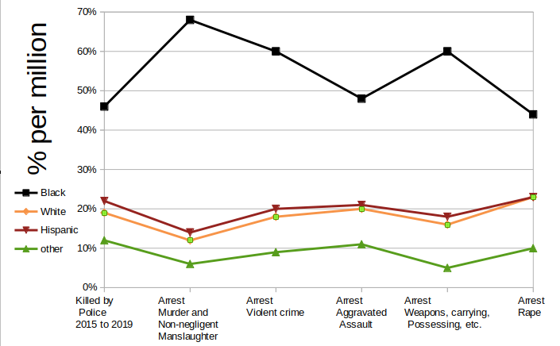
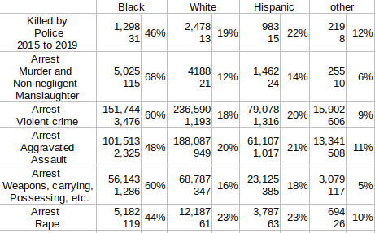

"systemic police racism" is a hoax" started by the Washington Post and it's killing police officers and the public. Their news stories site University research papers as proof. Not 1 research papers mentions "racism" in the conclusion. In fact, find any University professor to show you a research paper that concludes "racism" is a problem.
You won't find the word "racism" anywhere in the Washington Post's most damning evidence: research paper "Risk of being killed by police use of force in the United States by age, race–ethnicity, and sex". There isn't a conclusion. You can't find 1 professor who will state "systemic police racism" is far more likely than "systemic black violence" from this paper.
This graph shows that "systemic black violence" is far more likely than "systemic police racism". Notice that police killing black people is lower than violent crime arrests and the opposite for all other races. The crimes in this graph are not white privilege. Police will always arrest for murder and aggravated assault.
For those who want to verify this chart: The arrest data comes from the FBI crime statistics for 2017> (most recent available) . The "killed by police" comes from a Washington Post story (The hispanic and other values were recalculated using the correct population). Rate (per million) is displayed to match BLM methods for making comparisons. The following is the data from both sources.
Ask any University professor to show you 1 research paper that has "racism" as part of their conclusion. They do not exist.
The Washington Post started "systemic racism" in 2015 and won a Pulitzer prize in 2016 for it. They continue to win various Pulitzer prizes. In 2019, the research paper mentioned below was published. The Washington Post wrote hundreds of articles claiming the conclusions came from this paper which does not have a conclusion.
Journalists must be unbiased but instead, they drew conclusions to serve their agenda. They created the "systemic racism" hoax to serve their agenda. This came at the cost of their integrity and worse yet, the lives of police and people in the USA.
‐‐‐‐‐‐‐ Original Message ‐‐‐‐‐‐‐
On Sunday, September 13, 2020 9:38 PM, Black Lies Matter <blackliesmatter@protonmail.com>
To: pulitzer@pulitzer.org
Journalist used to have integrity. Please ask your board if Pulitzer prizes still stand for integrity and excellence in journalism. You continue to give the Washington Post various Pulitzer prizes while they lack complete moral integrity. Are you sure they embody excellence in journalism for the prizes they were awarded? they receive notifications of errors but they fail to take any corrective action, notify readers or write a retraction.
One of many examples is their 7/15/2020 article https://www.washingtonpost.com/outlook/2020/07/15/police-shooting-study-retracted/ which discusses a study / research paper about "racial disparities in fatal officer-involved shootings". This research paper was being used to denounce hundreds of the Washington Post's articles claiming black genocide by the police. They received a Pulitzer prize in 2016 on this topic and they must prove it at all cost. They are the only news media to write an extensive article on the retraction. Clearly the research paper was a conflict of interest they are unwilling to be unbiased.
Notice the title in the WP article says the study was full of errors and has the line "But the study was fundamentally flawed, and the authors have admitted as much" which refers to the retraction of the study. In other words, the Washington Post is saying "The authors retracted the research paper because it was fundamentally flawed" but looking at the retraction, notice it says the retraction is because of misuse. Are these journalists illiterate or are they liars? They provided links to the retraction information which originally said they stand behind their work but retracting because of misuse. The authors were pressured into rewording the retraction to state "given these issues" and remove "we stand by our work". Access to the original retraction has been blocked. Thankfully, someone at retractionwatch commented about standing by their work". I suspect that WP played a major role in the retractions. Remember it was WP's database they were using. The retraction is at https://www.pnas.org/content/117/30/18130.
Information about the retraction are at https://retractionwatch.com/2020/07/06/authors-of-study-on-race-and-police-killings-ask-for-its-retraction-citing-continued-misuse-in-the-media/ which is important. WP created the "black genocide by police" hoax using the 2019 research paper "Risk of being killed by police use of force". Missing is the most important part - the conclusion. What conclusion does the author believe this paper demonstrates? What value did the authors believe this paper will show. You can find the research paper used by WP at https://www.ncbi.nlm.nih.gov/pmc/articles/PMC6708348/. Comparing both research papers and the retractionwatch information mentioned above, you will quickly realized there was no probative value and was intended solely for WP as proof black genocide by police.
The Washington Post was the first news media to release several articles creating "black genocide by police" hoax. Their goal was to give momentum to Black Lives Matter that was lacking even into the Obama administration. They made "woke culture" a huge success. They caused destruction that cost people their lives. They place every american in danger.
Worst of all, they put a bulls eye on every police officer.
Trump tweets which makes fact checking extremely easy. Fact checking journalist is a monumental task. Who is more trustworthy?
For their lack of integrity and years of false reporting, the very minimum you should do is to publicly censure the Washington Post and have them respond to the censure with their contrition. Revoking their prizes would be far more appropriate.
Please have your board provide the answers to the following questions by Wednesday evening.
1. Does Pulitzer still stand for integrity and excellence in journalism?
2. What actions will Pulitzer take against the Washington Post?
3. When will these actions be taken?
We appreciate your keeping journalism a noble profession. Please ensure we have access to trustworthy unbiased news. News that doesn't have an agenda.
We look forward to hearing from you by Wednesday.
Thanks.